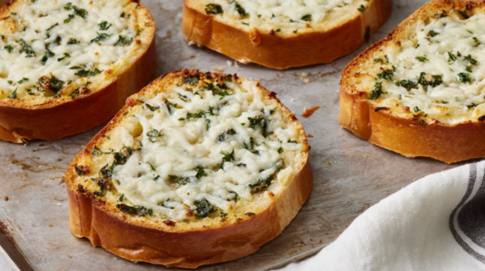

Garlic Bread
Home

Garlic bread is a tasty kind of bread that you can dip in spaghetti sauce or just eat plain!
Ingredients
- ½ cup butter
- 1 ½ tablespoons garlic powder
- 1 tablespoon dried parsley
- 1 (1 pound) loaf Italian bread, cut into ½-inch slices
- 1 (8 ounce) package shredded mozzarella cheese
Steps
- Gather all ingredients.
- Preheat the oven to 350 degrees F (175 degrees C).
- Melt butter in a small saucepan over medium heat; stir in garlic powder and dried parsley.
- Place bread slices on a medium baking sheet. Using a basting brush, brush bread generously with melted butter mixture.
- Bake in the preheated oven until lightly toasted, about 10 minutes.
- Sprinkle bread with mozzarella cheese and any remaining butter mixture. Continue baking until cheese is melted and bread is lightly browned, about 5 minutes.